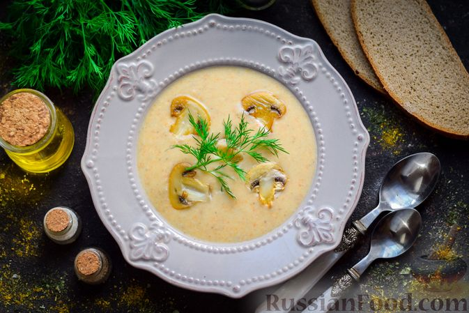

Кулинарные рецепты!
Сырный крем-суп с шампиньонами:

Сырный крем-суп с шампиньонами - нежное первое блюдо, которое просто влюбляет в себя с первой ложки. Готовится суп проще простого, результат порадует вас и всю вашу семью. Добавление сливочного сыра и сливок делают свое дело, утонченный привкус просто завораживает.
Продукты:
- Сыр сливочный - 120г
- Шампиньоны - 300 г
- Сливки 20% - 100 мл
- Картофель - 3-4 шт
- Лук репчатый - 1шт
- Морковь - 1шт
- Соль - по вкусу
- Перец чёрный молотый - по вкусу
- Чеснок сушёный молотый- 1/2 ч. ложки
- Масло растительное- 2 ст. ложки
- Зелень свежая (для подачи, по желанию)- по вкусу
- Вода - 1,5 л
- Подготовить все необходимые продукты.Картофель, лук и морковь очистить.Картофель нарезать средними кусочками.
- Морковь нарезать произвольными кусочками или натереть на крупной терке.Лук нарезать небольшими кусочками.
- Шампиньоны нарезать средними кусочками.
В сковороде разогреть растительное масло, выложить нарезанные овощи и жарить 10 минут, периодически помешивая.
- Переложить овощи в кастрюлю, влить 1,5 л теплой воды и варить на умеренном огне 25-30 минут.Затем добавить в кастрюлю сливочный сыр.
-
Влить сливки, добавить соль, чёрный молотый перец и сушёный чеснок. Перемешать и варить суп еще 7-8 минут.
Взбить суп при помощи погружного блендера. Попробовать суп, отрегулировать вкус и подавать к столу.
-
Разлить сырный крем-суп с грибами по тарелкам, при желании украсить свежей зеленью. Подавать суп к столу можно с сухариками и отдельно поджаренными грибами.Приятного аппетита!